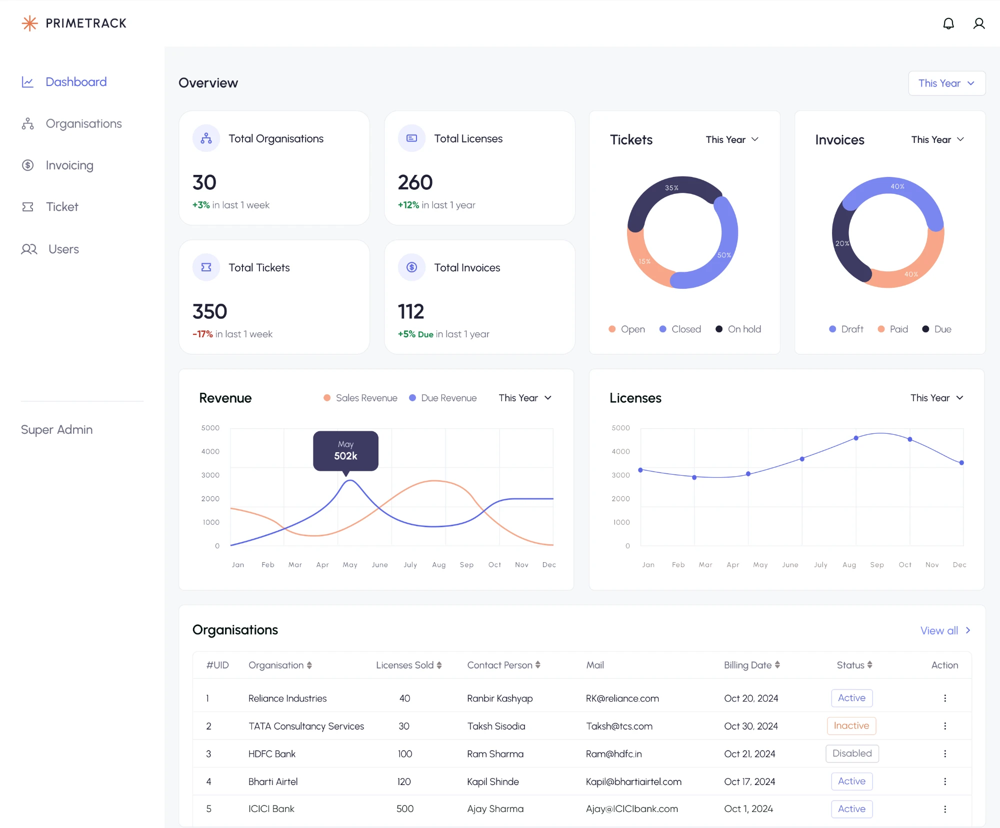
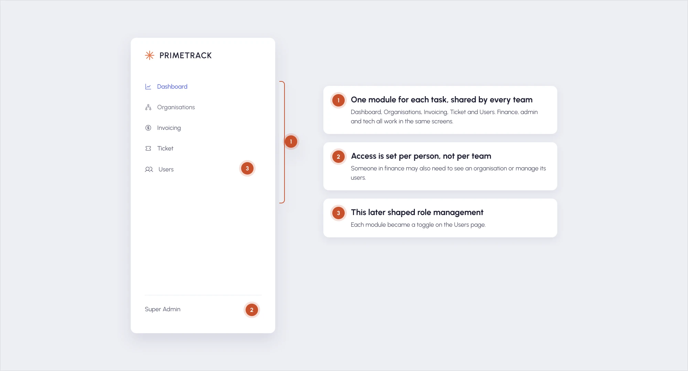
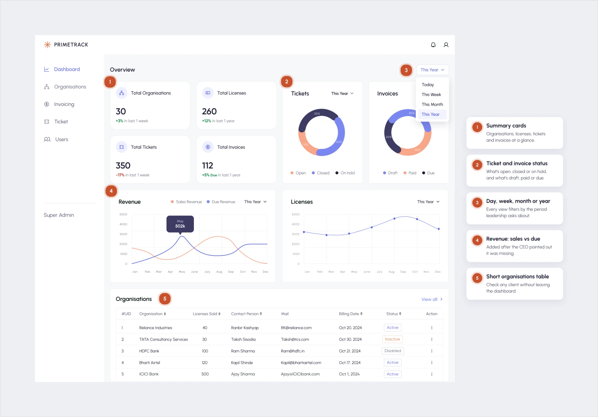
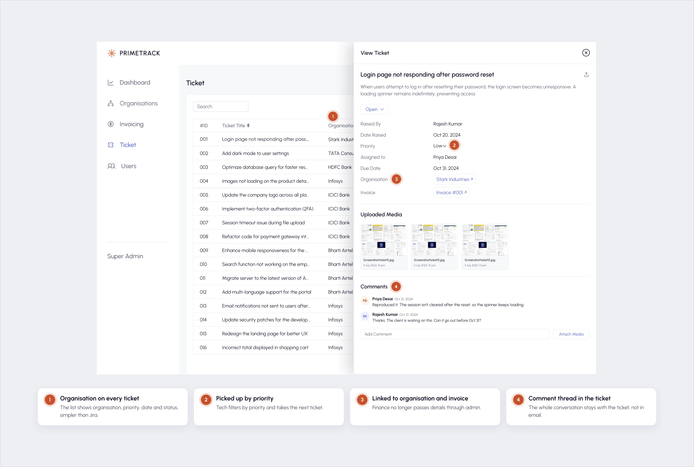
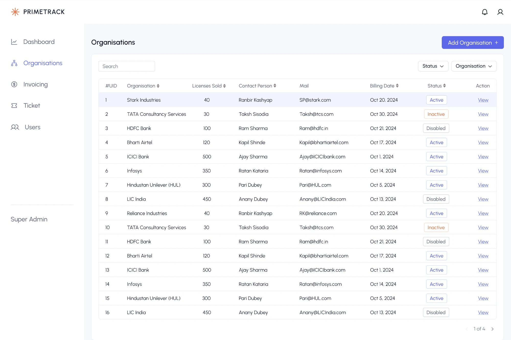
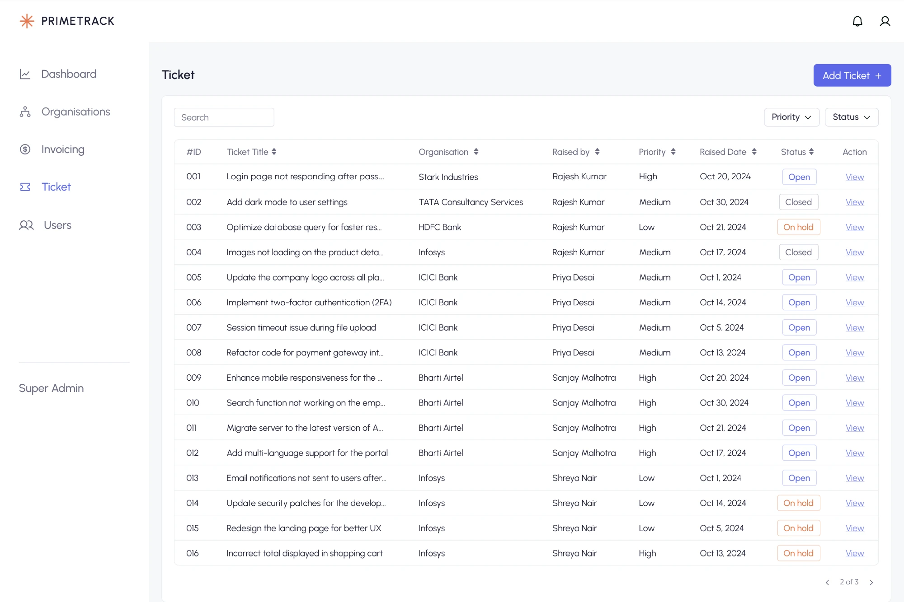
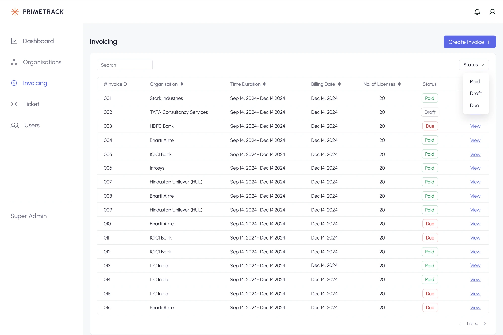
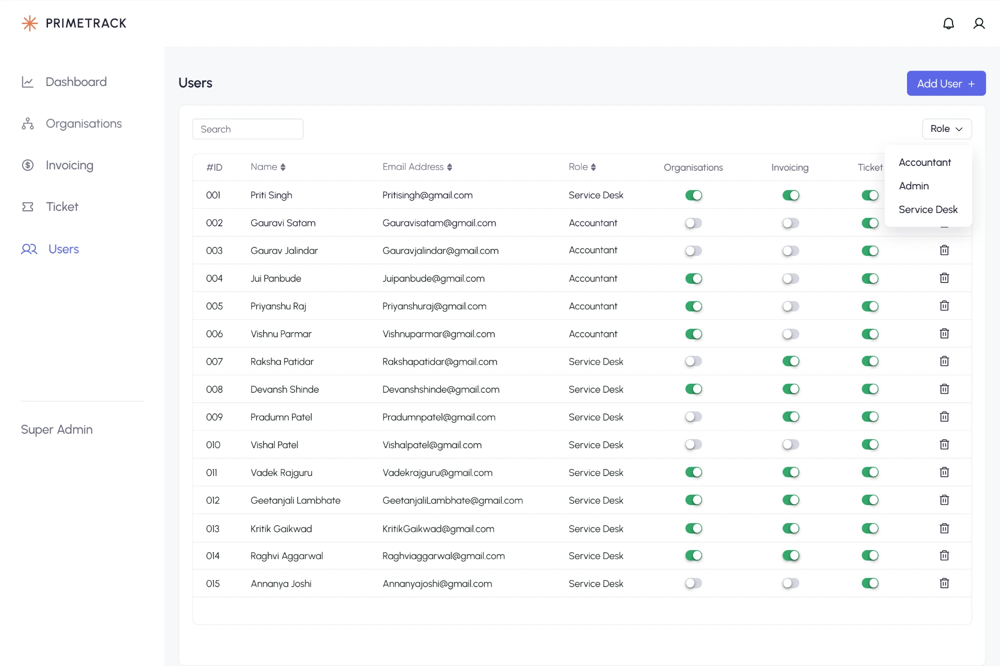
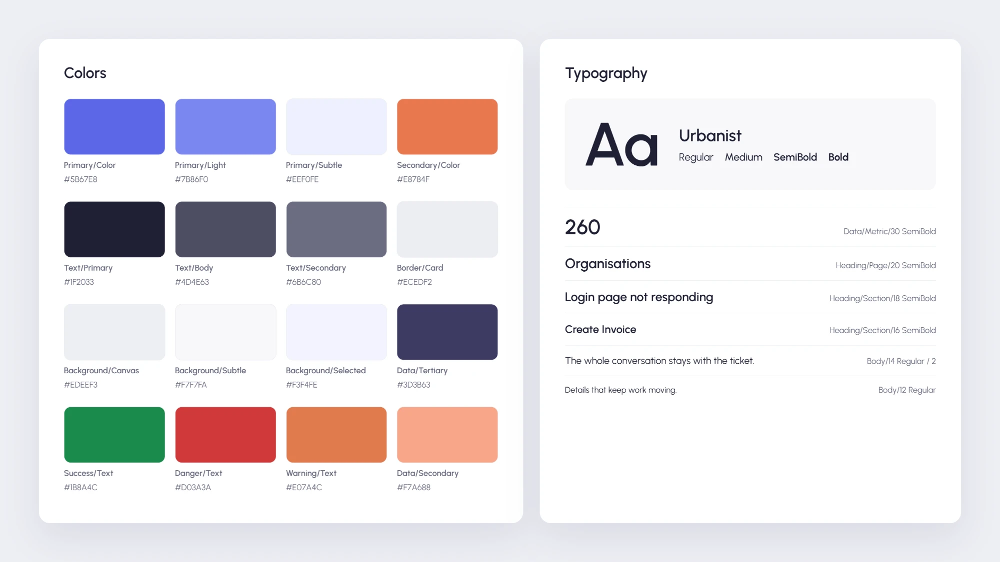
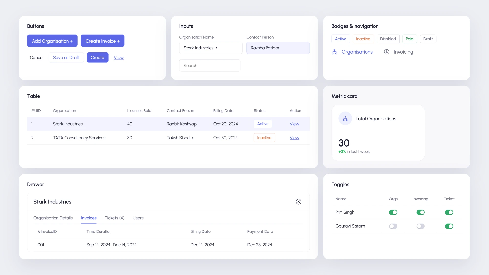

Case study · B2B SaaS · Internal platform
PrimeTrack: one platform to manage clients, tickets and invoices
I designed the internal platform 47Billion uses to manage clients, licenses, tickets and invoices, replacing Zoho Invoice, Jira and Excel. In daily use since March 2024.

At a glance
The problem
Four teams ran one client business across three disconnected tools, so issues bounced and data was re-typed.
What I did
I interviewed the teams, audited their tools and designed one shared platform, then tested it and supported the build.
The outcome
Three tools became one, a paid subscription was retired, and teams report faster ticket resolution and less duplicate data.
The problem
47Billion sells software licenses to other businesses. As the client base grew, managing those clients was split across three tools, each owned by a different team:
| Tool | Used for | Owned by |
|---|---|---|
| Zoho Invoice | Raising invoices, tracking payments | Finance team |
| Jira | Logging and resolving client tickets | Admin and tech teams |
| Excel | Client records, licenses, user access | Project manager |
Clients raised issues by email, and the admin team logged them on their behalf. The real cost sat in the handoffs between teams, as these two everyday use cases show:
Use case 1
Resolving a client's invoice issue
Before
- Client emails the issue
- Finance checks the invoice in Zoho
- Admin logs it in Jira
- Tech picks it up
After
- Client reports the issue
- Finance raises a ticket, linked to the invoice
- Tech picks it up by priority
- Resolved in the ticket thread
Result
No relay through admin and nothing re-typed: every team works from the same client record
Use case 2
Checking revenue and which clients are active
Before
- Finance checks Zoho
- Admin checks Jira
- PM checks Excel
After
- CEO opens the dashboard
- Filters by day, week, month or year
- Sees tickets, invoices, revenue and licenses
- Checks any client in the organisations table
Result
The full picture on one screen, without chasing three teams
How disconnected tools held the business back
Slow ticket resolution
Issues were relayed through two or three teams before tech could start, so clients waited.
Duplicate data entry
Client details were re-typed into every tool, creating duplicate records and repeated errors.
Slower payment follow-up
Finance chased late payments but couldn't raise an issue themselves, so every problem went through admin.
No visibility for leadership
The CEO and PM had no single view of tickets, revenue or license use. Every answer meant asking three teams.
How might we give every team one shared place to manage clients, so issues get resolved without chasing people across tools?
Who I designed for
Five roles depended on this setup every day: three teams who do the work, and two leaders who need to see it. Each team's work depended on another's, so the real thing to design was the handoff between them.
Primary users · Teams who do the work
-
Admin
Logs client tickets, manages users and access
Interviewed- Relied on
- Needs
- To give or change access from one screen
- A simpler way to log tickets than Jira
- Pain points
- Jira was too technical for day-to-day work
- Logged every emailed issue by hand, while clients waited
-
Finance
Raises invoices, chases payments
Interviewed- Relied on
- Needs
- To raise invoices in PrimeTrack, from their existing templates
- A client's tickets and contacts while chasing an invoice
- Pain points
- Chased late payments with no easy way to raise an issue
- Zoho's invoice form had too many fields
-
Tech
Picks up and resolves tickets
Interviewed- Relied on
- Needs
- Issues straight away, without a relay through other teams
- Clear priorities, with the whole conversation in the ticket
- Pain points
- Issues arrived only after two or three teams
- Details re-typed at every handoff, causing errors
Stakeholders · Leaders who need to see it
-
Project manager
Keeps client and license records
Interviewed- Relied on
- Needs
- Everything about one client in one place
- Tickets, invoices and revenue in one view
- Pain points
- Searched several tools to piece together one client
- Any answer meant asking three teams
-
CEO
Needs a view of how the business is doing
Stakeholder- Relied on
- Needs
- The business at a glance: tickets, invoices and licenses
- Revenue, comparing sales with what's still due
- Pain points
- No dashboard to see what was going on
- No view of which clients actively used their licenses
Constraints
8 weeks
For research and design, through to launch
Full replacement
All three tools retired, not run alongside, with existing records imported
5 modules at once
Designed in parallel, yet they had to feel like one product
Existing style
Earlier client screens already used Gilroy and a blue primary, so I built on them
So I spoke to people first, tested rough wireframes early, and checked feasibility with developers before committing to any pattern.
Research findings
With a tight timeline, I went straight to the source:
4 interviews
Face to face with an admin, the head of finance, a tech team member and the project manager
Tool audit
Zoho Invoice and Jira, as the teams actually used them
Reference review
Admin interfaces in other products, for patterns worth borrowing
What I found
The tools weren't broken, just not built for us
Zoho and Jira are general-purpose products. Teams worked around features they didn't need, and admins found Jira too technical for day-to-day work.
Every handoff meant re-typing the same information
Nothing connected, so client details were copied by hand between tools. The amount of duplicated data surprised me more than anything else in the audit.
Delay came from the relay, not the fix
Most tickets weren't hard to solve. They were slow because information passed through two or three teams first. Removing handoffs mattered more than building a better ticket tool.
Leadership was flying blind
The CEO and project manager had no single view of tickets, invoices, revenue or client activity. Any answer meant asking three teams.
Project scope
The first release had one job: fully replace the three tools. Everything else could wait.
First release
Added during the project
Saved for later
Key design decisions
01 Organised by task, not by team
Options: one section for each team (Finance, Admin, Tech), or shared modules: Dashboard, Organisations, Invoicing, Tickets and Users.
Why modules: access doesn't follow team lines. Someone in finance may also need to see an organisation or manage its users. Team sections would have locked people out or duplicated screens; modules let access be set per person, which later shaped role management.

02 One page for each client
The gap: this wasn't in the original scope, but research showed people searching for the same company in several places to piece together one picture.
What I proposed: an organisation page holding the client's licenses, users, linked tickets and invoices, each opening in a side drawer so nobody loses their place. A finance member looking at a late invoice can see the client's open tickets and contact details without leaving the page. The PM and CEO agreed to add it once they saw how directly it answered the duplication problem.
![PrimeTrack's Organisations list with Stark Industries open in a side drawer, and four numbered notes: 1, open any client from the list: View opens the organisation in a side drawer, so nobody loses their place; 2, one place for each client: details and licenses, invoices, linked tickets and users, each a tab in the same drawer; 3, checking a late invoice: finance sees every invoice for this client, with billing and payment dates; 4, tickets and contact one tab away: the client's open tickets and contact details are in the same drawer, without leaving the page.](images/primetrack-organisation-drawer-annotated.webp)
03 A visual dashboard instead of tables
The disagreement: the PM and CEO wanted detailed ticket and invoice tables on the dashboard. I was concerned that would recreate the overload of the old tools.
How I resolved it: I presented two options: a table-heavy dashboard, and a visual one with summary cards, charts and time filters. The visual one was chosen for its lower cognitive load and faster scanning. A short organisations table stayed at the bottom, so leadership could check a client without leaving the page.

04 Simpler tickets than Jira
The problem: admins found Jira too technical for day-to-day work.
What I designed: a simple ticket list showing the organisation, priority, date and status. Details and a comment thread open in a side drawer, and tech picks tickets up by priority. Tickets link to their organisation and invoice, so finance no longer passes details through admin.

05 Raising invoices inside PrimeTrack
The request: in the low-fidelity walkthrough, finance asked to raise invoices directly in PrimeTrack.
What I designed: an invoice flow built on their existing templates, with far fewer fields than Zoho, because client details already lived in the product. Invoices are tracked as Draft, Paid or Due, and linking them to the client lets finance trace a problem, raise a ticket or contact the client from one place.
![PrimeTrack's Invoicing list with the Create Invoice drawer open, and four numbered notes: 1, built on finance's existing templates: finance picks the template they already use; 2, client details filled in: choosing the organisation pulls in its contact, licenses and time duration, because they already live in PrimeTrack; 3, far fewer fields than Zoho: only the billing dates and a note are left to complete; 4, tracked as Draft, Paid or Due: saved as a draft first, then tracked against the client in the invoice list.](images/primetrack-invoice-drawer-annotated.webp)
Testing and iteration
I tested rough designs early, while changes were still cheap.
Low-fidelity walkthrough
Role management rebuilt; invoice creation added for finance
High-fidelity walkthrough
Flows signed off by the PM and CEO
User testing
With finance, admin and tech: minor UI tweaks, no structural changes
What went wrong
Role management
My first design used a drawer with a yes/no dropdown for each module. Admins needed something faster for a task they did all the time, so I rebuilt it as one page with a toggle per module. Catching it in low fidelity cost hours, not a rebuild.
The dashboard
I designed it around what I thought a product owner would want, and left out revenue. The CEO spotted it, and I added a revenue chart.
What both taught me: ask people what decisions they make before deciding what to show them.
Final design
Five modules share one table and side-drawer pattern, so anyone who learns one can use the rest.




Working with developers
I stayed with the team through development, because a design only works if it survives the build.
Feasibility first
Checked patterns with developers in low fidelity, before anything was final
Design system
A style guide and components, shared through Figma Dev Mode
Flow walkthroughs
Every flow explained before it was built, plus daily standups
Design QA together
Reviewed the build side by side with developers before launch
Accessibility: I checked colour and text contrast with an online contrast checker.


Impact
PrimeTrack replaced three tools, retired a paid subscription, and has been used daily by all five teams since March 2024.
What changed for the teams
Faster ticket resolution
Tickets no longer pass through several teams and tools before work starts.
Faster user access
Admins grant or change access from one screen.
Less duplicate data
Client information is entered once and traced in one place.
Easier invoicing
Finance raises and tracks invoices next to the client's full context.
Feedback
The CEO said they liked that I'd kept accessibility in mind and created a design system for the future. The teams described PrimeTrack as simple, minimal and easy to work with.
We didn't measure baselines before launch, so these changes come from the teams' own feedback rather than tracked metrics. Next time, I'd agree success metrics such as ticket resolution time with the PM before launch.
What happened next
The product worked well enough to be extended outward. I designed a client admin portal that mirrors the internal ticket experience, so clients now raise tickets themselves instead of emailing. Those tickets arrive directly in PrimeTrack, and the portal is live and in use.
What I learned
Speed is a feature in data-heavy tools
I now design the most frequent tasks to be the fastest.
Ask what decisions people make first
A dashboard is only as good as the questions it answers.
I wouldn't skip mid fidelity again
It would have caught small layout issues earlier.
Next, I'd build detailed financial reports
The natural next step for finance and leadership.
I used ChatGPT along the way to refine interface copy and to talk through problems when I was stuck.